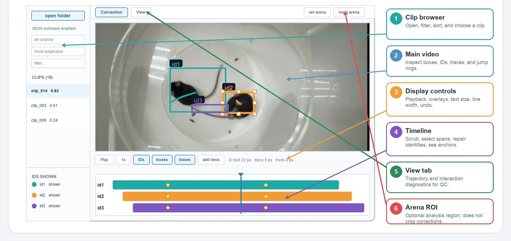
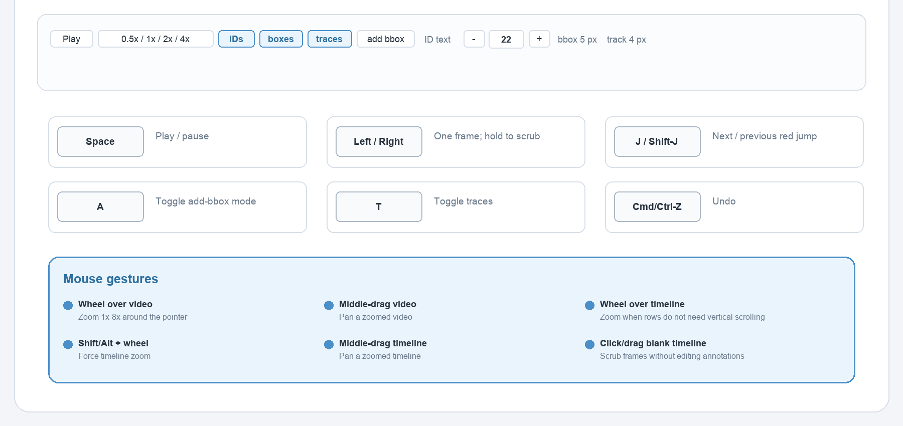
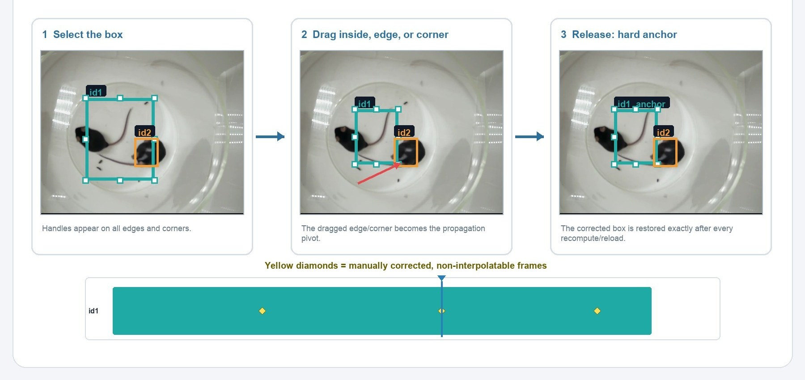
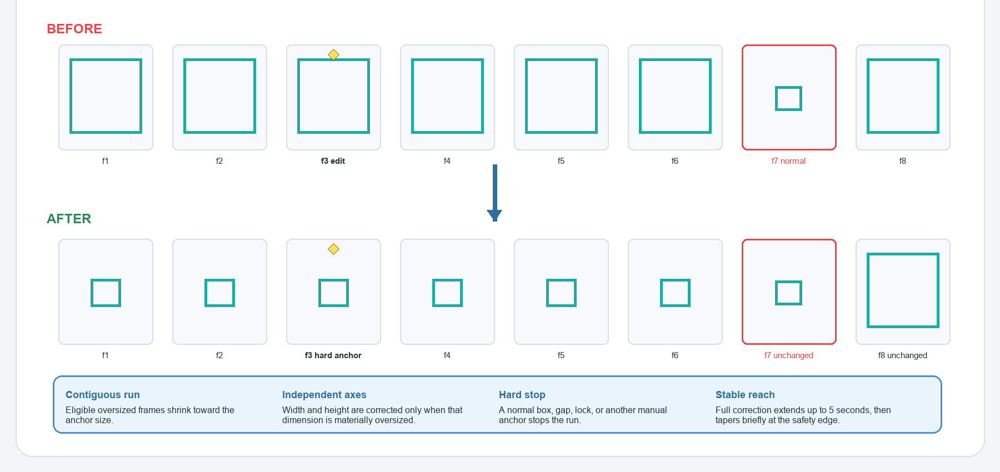
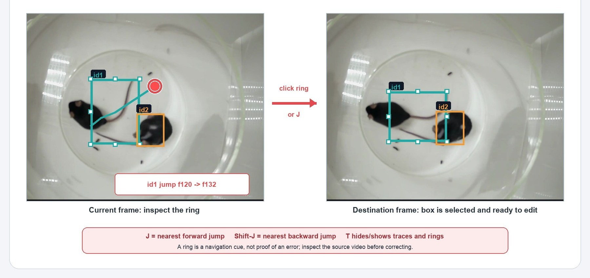
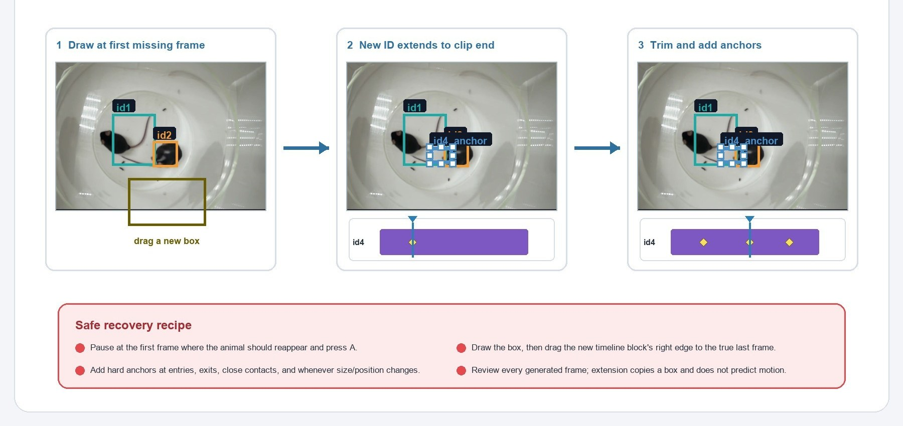
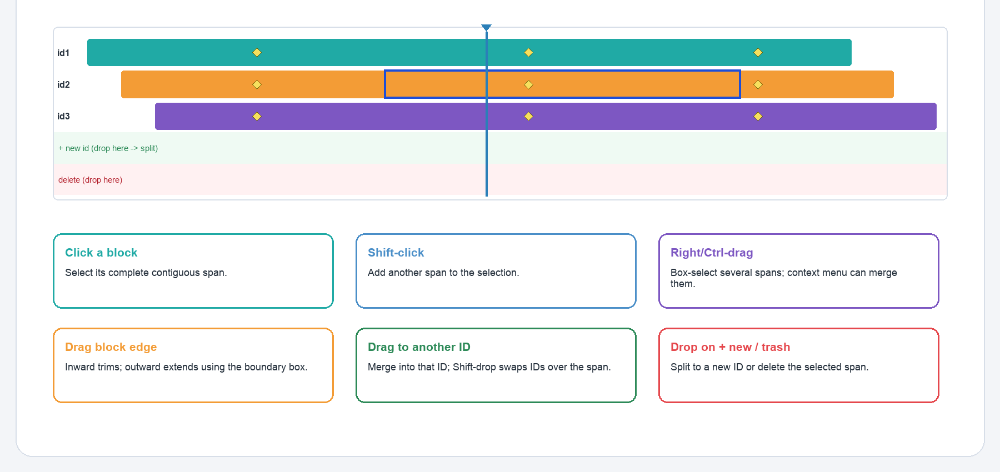
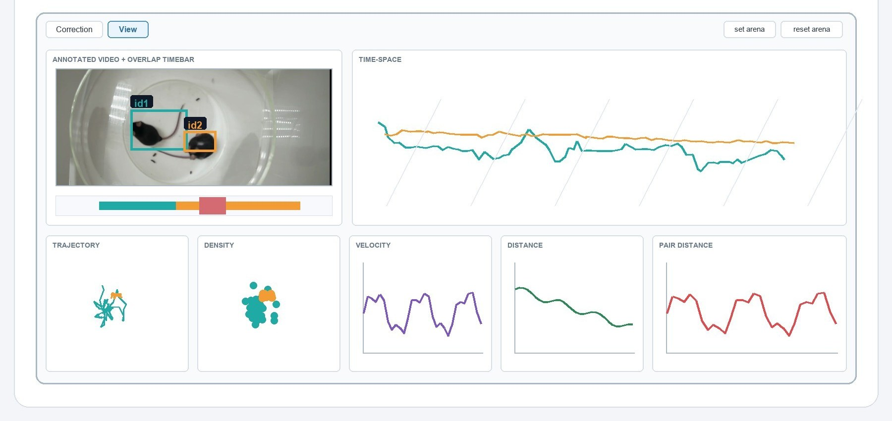

Multiple Mouse Tracking
A local, browser-based workbench for reviewing automatic multi-mouse tracking against video — correcting bounding boxes, repairing identity spans, and checking continuity with synchronized diagnostic views.



In this guide
- At a glance
- Before you begin
- Know the workspace
- Navigate & tune the display
- Correct bounding boxes
- Smart oversized-run shrink
- Red jump rings
- Recover a missing detection
- Timeline identity repair
- View diagnostics & arena
- Autosave, undo & recovery
- QC checklist
- Keyboard & mouse reference
- Troubleshooting & limits
1 · At a glance
A local environment for reviewing and correcting the output of our in-house tracking model — not an automatic tracker.
This tool lets you review the results of our in-house developed mouse detection and tracking model against the source video, correct bounding-box geometry, repair identity spans, and check continuity with synchronized diagnostic plots. Everything runs in your browser and nothing is uploaded.
What it is not: a model-training interface, an automatic tracker, a pose-estimation system, or a calibrated behavioral-analysis package. Its plots are quality-control aids based mainly on bounding-box centers.
The review workflow
- Prepare a copied or version-controlled folder of paired JSON + MP4 files.
- Open the folder, choose a suspicious clip, and confirm JSON autosave is enabled.
- Inspect video, traces, and identity continuity frame by frame.
- Correct bounding-box geometry with exact hard anchors; use smart propagation only where it behaves safely.
- Repair identity spans on the timeline and inspect all affected frames.
- Use the View diagnostics for QC, wait for the saved status, then reopen and verify.
2 · Before you begin
Protect the original tracking output before granting write access.
Open the tool in a current Chromium browser that supports writable folder access — Chrome or Edge. Click open folder and approve read/write access. The browser reads files directly in the chosen folder; it does not scan nested subfolders.
- Keep each clip's JSON and MP4 in the same top-level folder with exactly the same basename.
- The MP4 supplies the review video; JSON can load without it, but the video area will be blank.
- Playback is muted by design.
- A manifest.json is optional but recommended for corpus, suspicion, and clip metadata.
Recommended layout & JSON format
Each frame is a list of detections. The first five values are ID, x, y, width, height; any trailing values are carried forward for surviving rows.
Without a manifest, the tool treats most top-level .json files as clips — keep unrelated files (e.g. *.stats.json) out of the working folder, or provide a curated manifest.
3 · Know the workspace
The Correction tab is for editing; the View tab is for synchronized QC diagnostics.
| Area | What it controls |
|---|---|
| Clip browser | Folder status, corpus filter, sorting, text filter, and clip selection. |
| IDs shown | Visibility only — click a row to hide/show, click its swatch to cycle color, or reset colors. |
| Video overlay | Current boxes, ID labels, traces, selection handles, red jump rings, and the HUD. |
| Control strip | Playback, overlays, Add bbox, ID text size, box/trace widths, selection readout, Undo, deletion. |
| Timeline | Presence blocks, current frame, hard-anchor diamonds, group selection, and identity edits. |
| View | Annotated video/timebar, Time Space, trajectory, density, velocity, distance, pair-distance plots. |
A five-minute practice pass
- Make a disposable copy of one paired JSON/MP4 clip and open its folder.
- Confirm JSON autosave is enabled, select the clip, and use Space plus the arrow keys to navigate.
- Click a box and make a small move — confirm a yellow diamond appears in the timeline.
- Press Cmd/Ctrl+Z and confirm the edit is removed and autosaved.
- Wait for the saved message, reopen the folder, and verify the correction is reconstructed.
4 · Navigate & tune the display
Navigation and styling controls never change annotation data.

Playback & frame stepping
- Play/Pause: the button or Space. At the end, Play restarts from frame 1.
- Speed: 0.5×, 1×, 2×, or 4×. Any edit or arrow-key step pauses playback.
- Tap ←/→ for one frame; hold for smooth stepping, release to settle on a precise frame.
- Click or drag blank timeline space to scrub without changing annotations.
Zoom & pan
| Surface | Gesture | Result |
|---|---|---|
| Video | Wheel | Zoom 1×–8× around the pointer. |
| Video | Middle-drag | Pan the zoomed image. |
| Timeline | Shift/Alt + wheel | Zoom 1×–16× around the pointer. |
| Timeline | Middle-drag | Pan a zoomed timeline. |
IDs, boxes, and traces toggle independently. ID text is measured in screen pixels (8–72 px) and persists in browser storage; box lines range 2–14 px and traces 1–14 px. The selected box shows a dashed outline with eight handles, and a manual hard anchor is marked by a diamond by the ID label and a yellow diamond in the timeline.
5 · Correct bounding boxes
A box drag edits the current frame — even though clicking selects the full contiguous timeline block.

| Pointer | Action |
|---|---|
| Inside the box | Move without changing width or height. |
| Side handle | Resize one dimension, preserving the opposite edge. |
| Corner handle | Resize width and height, preserving the opposite corner. |
| Esc during drag | Cancel and restore the previous box. |
A drag must move a few screen pixels before it commits. Boxes are clamped to the video with a minimum source size of 4×4 px. When boxes overlap, the selected one is favored; otherwise the smallest hit box wins.
6 · Smartly shrink a continuous oversized run
Use one representative correction to reduce adjacent over-large predictions without touching normal boxes.

When you reduce a box dimension by roughly 2× or more (without substantially enlarging the other), the tool treats it as a likely correction of an oversized run and shrinks contiguous over-large neighbors toward your anchor.
- Only contiguous frames that are still clearly oversized are eligible; an already-small dimension is never enlarged.
- Normal/small boxes are left pixel-identical and stop propagation. A missing-ID frame, structural lock, or another anchor is also a hard barrier.
- Correction extends up to ~5 s on either side, with a short smooth safety-edge transition.
Recommended pattern
- Pause on a clear frame near the middle of the oversized run.
- Resize tightly around the animal using the edge or corner that should stay fixed.
- Scrub backward and forward through every affected frame.
- Confirm normal boxes at the run boundary are unchanged.
- Add another anchor when the true size, orientation, or motion changes — don't force one anchor across a different situation.
If a neighbor should not change: undo immediately, correct that neighbor manually, and use its anchor as a hard barrier for the run.
7 · Reach suspicious frames with red jump rings
A jump ring is a navigation cue — not proof that the tracking is wrong.

With traces enabled, the tool flags when an ID's center jumps by more than roughly 7.5% of the larger video dimension between consecutive detections, drawing the destination as a red ring.
- Hover a ring to enlarge it and read the HUD's ID and source/destination frames.
- Click to jump to the destination, select that ID's block, and hand off to box editing.
- Shift-click to append that block to the current selection.
- J = nearest forward jump · Shift+J = nearest backward jump · T toggles traces (and rings).
Inspect first: fast real motion, a long detection gap, or a true entry/exit can all create a ring. Correct only after checking the video and neighboring frames.
8 · Recover a missing detection with Add bbox
Add bbox creates a new track to the clip end — trim it immediately when recovering only a short gap.

- Go to the first frame where the missing animal should reappear.
- Click add bbox or press A, then drag a rectangle (smaller than ~6×6 px is rejected).
- The tool assigns the next unused ID and copies the initial rectangle from the current frame to the clip end.
- Drag the new timeline block's right edge inward to its true last frame.
- Add geometry anchors across the recovered span and inspect every entry, exit, and close contact.
- Relabel or merge the recovered block only after its time span is correct.
No motion prediction: Add bbox and outward extension copy a fixed boundary box — they do not track the animal automatically.
9 · Timeline identity repair
The timeline operates on contiguous identity blocks, not arbitrary interior lassos.

Each colored row is one ID; a solid segment is a contiguous presence block. Yellow diamonds mark manual anchors and the blue line is the current frame. Clicking a box or block selects that ID's complete contiguous block — so Delete may remove many frames even though a box drag edits only one.
- Click a block to select its span; Shift-click to append more.
- Right/Ctrl-click a block to select and open the context menu; Right/Ctrl-drag across rows for a rectangular group selection.
Structural operations
| Gesture | Result | Mandatory follow-up |
|---|---|---|
| Delete / trash drop | Remove detections & anchors over the selection. | Confirm the range before committing. |
| Drop on ＋ new ID | Assign the range to the next unused ID. | Verify both old and new lanes. |
| Drop on another ID | Reassign/merge into the target ID. | Inspect overlaps — two boxes may become their union. |
| Shift-drop on another ID | Swap the two IDs over the dragged span. | Inspect both tracks at both boundaries. |
| Drag block edge inward | Trim false presence. | Check deleted anchors and the boundary. |
| Drag block edge outward | Extend using the boundary box. | Add anchors — copied boxes aren't motion prediction. |
| Select + context merge | Merge into the first selected ID. | Confirm the first selection is the intended target. |
10 · Use View & define an arena
View summarizes the same corrected annotations without creating a second copy.

| Panel | Look for | Interpretation limit |
|---|---|---|
| Annotated Video | Box/ID agreement & arena placement. | Still needs source-video judgment. |
| Overlap timebar | Close-contact & identity-risk moments. | Box overlap ≠ physical contact. |
| Time Space | Trajectory continuity & abrupt jumps. | Sampled 3D display, not calibrated. |
| Trajectory Map | Implausible jumps, boundary/path errors. | Uses box centers, not pose landmarks. |
| Spatial Density | Where each ID spends time. | Depends on tracking & chosen arena. |
| Velocity | Spikes suggesting ID switches/errors. | Pixels/second, not physical speed. |
| Distance | Unexpected accumulation or flat intervals. | Cumulative pixel distance. |
| Pair Distance | Abrupt changes during encounters. | Center-to-center pixel distance. |
Click the Annotated Video to select the nearest ID (Shift-click appends); drag the timebar or metric plots to scrub; drag Time Space to rotate, wheel to zoom, double-click to reset. IDs shown controls which tracks enter the plots.
Arena ROI: click set arena then drag a rectangle on the Annotated Video. It normalizes the spatial maps and is saved as plot_roi in the JSON; reset arena restores the full frame. It does not crop box editing or convert pixels to physical units.
11 · Autosave, undo & recovery
The durable record is the successfully written JSON — not the browser cache.
There is no separate Save, Export, Save As, or Import. Edits are queued for JSON writeback automatically; switching clips or folders flushes pending saves. Before closing the page, wait for a saved status message. Corrected frames are written to frames, the arena to plot_roi, and _mmt_bbox_editor stores hard anchors, immutable source bases, propagation mode, and structural locks so the result can be reconstructed.
- Undo stores up to 50 box or structural operations and is itself autosaved. There is no Redo, and history clears when another clip is opened.
- Visibility, color, label size, line width, and zoom are not annotation-Undo operations.
If a write fails
- Stop editing and read the exact save-status message.
- Keep the page open while restoring folder permission or removing a file lock.
- Manual box anchors may have a browser-cache fallback; structural edits do not.
- Compare with your external backup — browser cache is an emergency aid, not a backup.
- After recovery, reopen the folder and verify the saved clip before continuing.
12 · End-of-clip QC checklist
Finish every clip with a systematic pass; don't rely on a single corrected frame.
- The JSON save status confirms the most recent changes were written.
- Every visible animal has the correct ID through entries, exits, overlaps, and close contacts.
- No selected box is shifted, too large, too small, or clipped by the video boundary.
- Every manual anchor is intentional and exact; none placed on an ambiguous frame.
- Smart-propagated runs were inspected frame by frame, including both normal-box barriers.
- Red jump rings were reviewed or explained by real motion, gaps, or entry/exit events.
- Added or extended tracks were trimmed and given enough geometry anchors.
- Timeline merges, swaps, splits, trims, extensions, and deletions were checked at both boundaries.
- Trajectory and velocity views contain no unexplained discontinuity or spike.
- Overlap and pair-distance moments agree with the annotated video.
- Arena ROI is correct, or reset arena restored the full frame.
- The folder was reopened and a sample of corrected frames verified after save.
13 · Keyboard & mouse reference
| Key | Action |
|---|---|
| Space | Play or pause. |
| ← / → | Previous/next frame; hold for smooth stepping. |
| J / Shift+J | Nearest forward/backward visible red jump marker. |
| A | Toggle Add-bbox mode. |
| T | Toggle traces and jump rings. |
| Delete / Backspace | Delete the current timeline selection. |
| Cmd/Ctrl+Z | Undo the most recent box or structural operation. |
| Esc | Cancel a drag / Add bbox, or close the timeline menu. |
| Where | Gesture | Action |
|---|---|---|
| Video | Click box | Select the ID's contiguous block; handles appear. |
| Video | Drag inside/edge/corner | Move or resize the current-frame box. |
| Video | Click red ring | Jump to the suspicious destination frame. |
| Timeline | Click / Shift-click block | Select one block / append another. |
| Timeline | Drag block vertically | Reassign/merge; Shift-drop swaps. |
| Timeline | Drag block edge | Trim inward or extend outward. |
| View plots | Drag | Scrub synchronized frames. |
14 · Troubleshooting & known limits
| Symptom | What to check |
|---|---|
| Folder will not open | Use current Chrome/Edge, grant read/write access, choose the top-level folder. |
| Clip has no video | Confirm a same-basename, browser-playable MP4 sits beside the JSON. |
| Arrow keys feel stuck | Release both arrows, click outside any input, press again; editing always pauses playback. |
| Delete changed too many frames | Undo immediately — a click selects the whole contiguous presence block. |
| Extended boxes don't follow motion | Expected: extension copies the boundary box. Add anchors or shorten the extension. |
| A large correction touched the wrong neighbor | Undo; anchor the frame that must stay exact, then review the barriers. |
| Save reports failure | Stop, keep the page open, restore write permission/remove locks, verify against backup. |
| Unexpected clips appear | Add a manifest or remove unrelated top-level JSON (e.g. stats files). |
Known limits: no Redo, Save As, export copy, arbitrary interior lasso, or automatic backup. Only the selected JSON is rewritten (masks, MOT files, and model outputs are not synchronized). Plots use box centers and pixels — not calibrated distance or pose landmarks — and long clips are sampled for View, so the plots supplement but never replace frame-by-frame validation.